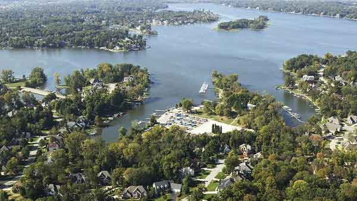

#17715 1 2007-10-29T23:38:53Z Skyline I live in the foothills of the Appalachians in a small town in Connecticut. Home to about 8,000 people, it's pretty cozy. But the benefit of living here is the climate; while it gets extremely hot in the summer, we get the full New England effect of the leaves changing colors in the fall, and a cold winter with a lot of snow. There's a lot of hills and forests which are great for mountain biking. The thing I'd rather have, however, is a warm, tropical climate. From my house, I can see Hartford and all of it's buildings, which is pretty cool. The nicest part is that I can see all of the fireworks in the different towns from my room on the Fourth of July. Although we go to the beach sometimes, the water is always freezing.
http://vvv.munic.state.ct.us/BURLINGTON/pictures.htm#375382 2 2007-10-30T00:02:29Z Guest 
Yup. Geist, Indianapolis, Indiana. Pretty suite. Lots of stuff to do, plus nice weather.
#375383 3 2007-10-30T00:23:36Z Turtle On the internet?

in all seriousness, though, I live in a moderately warm, and somewhat humid area. Many hills, fires here and there (no, I do not live in southern california), and the casual TP.

#375390 5 2007-10-30T00:59:13Z Axonn I'm in the village of Palmetto Bay in South Miami, Florida. I don't have any pictures, but nothing really happens here that's worth taking pictures of. Oh, except after we got a little affected by Hurricane Wilma. Oh, and my parents have pictures of post-Andrew wreckage. Besides that, nothing really happens. Wait, I remember that last year, some teen went around, going into cars. My mom left hers unlocked, and it got all messed up in there. The person even looked through my bookbag. The only bad thing about living here is that the power grid is always changing. After Wilma, we expected to get power back since we live right near the Miami Children's Hospital, but the power grid got changed because of construction, so our part of the street didn't get power back, and everyone with power was rubbing it in our faces by putting up Halloween decorations that were huge.
#375412 6 2007-10-30T03:04:25Z smartalco Home to about 8,000 people, it's pretty cozy. But the benefit of living here is the climate; while it gets extremely hot in the summer, we get the full New England effect of the leaves changing colors in the fall, and a cold winter with a lot of snow. There's a lot of hills and forests which are great for mountain biking.
make it flat and multiply the size of the town by 2.5
hays, ks
#375433 7 2007-10-30T04:18:16Z T3chno Okay,.....
Torrance, CA
Pretty good area, both education-wise and economy-wise.
#375450 8 2007-10-30T05:44:20Z Grassman7z7 Small Highway Town outside of Portland OR
I like the almost rural environment.
Although, it hasn't snowed much in years.
I blame Global Warming...
We had a bear once...that got national attention!
#375490 10 2007-10-30T10:41:51Z blue_tetris S--thole, USA.
Woah, you live there, man? I'm in a suburb. I can't afford the housing in S--thole.
#375720 11 2007-10-31T12:45:21Z Mechtradevil I live in a small, extraordinarily rural town called Lincoln, in the state of Vermont. It's neighbored by Bristol, a slightly larger town with a main street and the highschool I go to. My house is a little funkily built. We have a big "living barn" that is more of an upstairs house/toolshed than a barn, and we're situated in front of a large woods and to the side of a large field. We breed rabbits occasionally.
A picture of the Old Hotel in Lincoln... I have no pictures of my house though.
Old Hotel
The mountain of Abraham:
Mt Abe